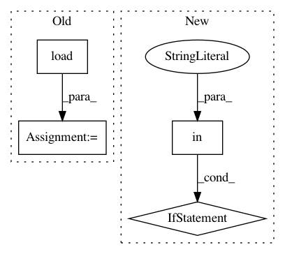

a473c777983b7f2e123f996c9b15607cb1979701,onmt/ModelConstructor.py,,load_test_model,#Any#Any#,117
Before Change
def load_test_model(opt, dummy_opt):
checkpoint = torch.load(opt.model,
map_location=lambda storage, loc: storage)
fields = onmt.io.load_fields_from_vocab(
checkpoint["vocab"], data_type=opt.data_type)
model_opt = checkpoint["opt"]
for arg in dummy_opt:
if arg not in model_opt:
model_opt.__dict__[arg] = dummy_opt[arg]
model = make_base_model(model_opt, fields,
use_gpu(opt), checkpoint)
model.eval()
model.generator.eval()
return fields, model, model_opt
After Change
model = make_base_model(model_opt, fields,
use_gpu(opt), checkpoint)
model.eval()
model.generator.eval()
return fields, model, model_opt
def make_base_model(model_opt, fields, gpu, checkpoint=None):
Args:
model_opt: the option loaded from checkpoint.
fields: `Field` objects for the model.
gpu(bool): whether to use gpu.
checkpoint: the model gnerated by train phase, or a resumed snapshot
model from a stopped training.
In pattern: SUPERPATTERN
Frequency: 5
Non-data size: 4
Instances
Project Name: OpenNMT/OpenNMT-py
Commit Name: a473c777983b7f2e123f996c9b15607cb1979701
Time: 2018-05-11
Author: stig-arne.gronroos@aalto.fi
File Name: onmt/ModelConstructor.py
Class Name:
Method Name: load_test_model
Project Name: lingpy/lingpy
Commit Name: 58ab225e313cde281696aca8bdfaff26695d879a
Time: 2013-07-17
Author: mattis.list@posteo.de
File Name: lingpy/data/model.py
Class Name: Model
Method Name: __init__
Project Name: KaiyangZhou/deep-person-reid
Commit Name: 25c64fdd9a89337c9eacac730912ba275dbaae8c
Time: 2019-03-08
Author: k.zhou@qmul.ac.uk
File Name: torchreid/utils/torchtools.py
Class Name:
Method Name: resume_from_checkpoint
Project Name: mozilla/TTS
Commit Name: e02fc51fde25ad2a66f630f79a5d6b8a8c9fedc7
Time: 2019-08-23
Author: egolge@mozilla.com
File Name: server/synthesizer.py
Class Name: Synthesizer
Method Name: load_tts
Project Name: IBM/adversarial-robustness-toolbox
Commit Name: f8a5a458ff6a35e91ae9d705160d73cdcc8adf97
Time: 2017-05-31
Author: valentina.zantedeschi@ibm.com
File Name: test.py
Class Name:
Method Name: